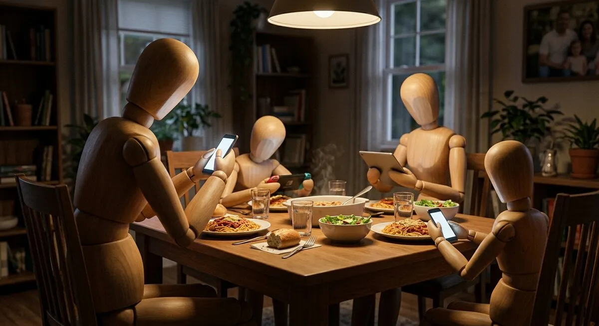
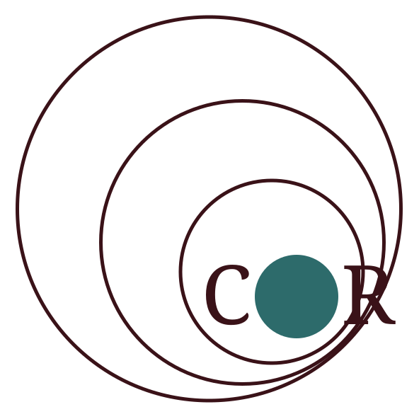
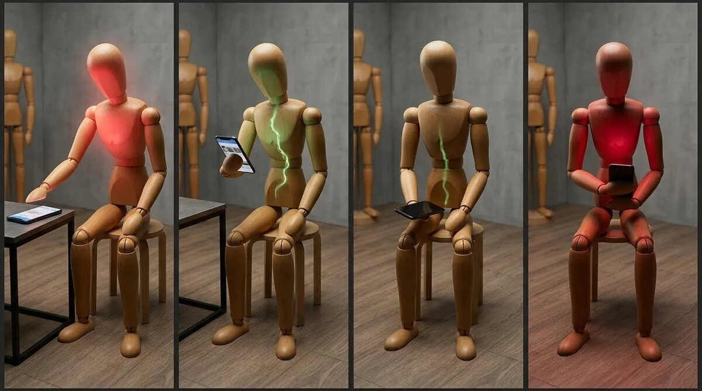
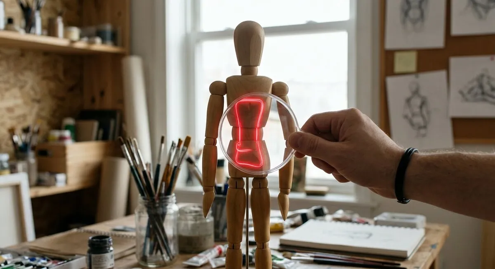
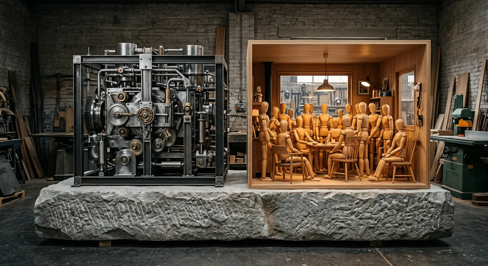

01 / 08 The claim
You're not broken.
What you feel is a healthy body reacting to a world it was never built for. The problem is the world, not you.

Demismatch (the Why) Vision Cor
Modern distress is accurate signaling about a world that no longer fits you, not a disorder in you. We can specify what you are actually built to need. Then build to it.

A complete account of what your systems need, and why. Everything here is built on it.
17 foundations · 15 mechanisms · 608 extractions · 64 researchers · every claim traces to a primary source
“I check my phone when I'm with people I love. I hate it, and I can't stop.”
Your coalition monitor is running. It evolved to track your people in a band of fifty. They're scattered now, and the only channel to them is the device in your hand. The monitor cannot stand down.
“I have more than I ever wanted, and I still feel behind.”
Your status sense is calibrated to a few dozen people you'd meet in a lifetime. It now measures you against millions, each showing their best day. The gauge was never built to read a crowd this size. It reads "behind" because the input is impossible, not because you fell short.
01 / 08 The claim
What you feel is a healthy body reacting to a world it was never built for. The problem is the world, not you.

02 / 08 The mismatch
Every system you run on - alarm, appetite, status, bonding - was tuned for a world that vanished ten thousand years ago. The programs still work. The world they expect is gone.
03 / 08 The hijack
The modern world is full of things that fire the right signal but do none of the job. They feel like the real thing. They aren't.
04 / 08 The trap
A counterfeit fires the signal but never meets the need, so the need stays open and the signal fires again. That's not a habit. That's a trap.

05 / 08 Wanting
Wanting is a signal, and signals can be gamed. The lonely person doesn't crave a friend. They crave the app. Preferences are the last thing you should build on.
06 / 08 What Cor is
Cor is the first formal specification of human motivational architecture. Every survival system, what each one evolved to do, and how the evidence holds up - structured so machines can read it, not just people.
17 foundations15 mechanisms608 extractions64 researchers

07 / 08 The AI argument
Right now, AI is trained on what people want - which means it's optimizing for proxies at scale. Feed it Cor instead and it has a real target: not what you reach for, but what would actually satisfy the need underneath. That's the difference between an engine that keeps loops open and one that closes them.

08 / 08 The fix
Give your systems what they were built for and the alarms switch off on their own. No willpower. No self-improvement. A world that fits.
Demismatch the front door Cor the spec Vision the map Ten truths the original story
Cor is an evidence-graded atlas of the complete human motivational and emotional architecture: a map of the systems that drive what humans want, feel, fear, and pursue, and what each of those systems was built to need.
Cor is currently an atlas. It maps the territory. The specification is the operational layer it is being built toward, and that word is reserved for that future layer. The precedent is the Allen Brain Atlas or the Human Cell Atlas: open foundational infrastructure that describes what a thing is, built so that anyone can build on top of it.
That modern human suffering is, in most cases, accurate signaling from a sound organism in a mismatched environment. The hardware works. The environment is wrong. Anxiety, low mood, chronic stress, loneliness, restlessness - these are usually intelligible outputs of systems doing their job, responding to conditions they were never built for. The problem is the gap between the world a human is built for and the world a human lives in. The fix is to change the world, not to locate a defect in the person.
Because it points at a blind spot in how we build technology, and especially how we try to align AI. The standard assumption is that what a person wants, clicks, or prefers reveals what is good for them. Cor's position is that preferences are outputs of evolved mechanisms, not ground truth. A lonely person can genuinely want an AI companion. A person caught in a feed can genuinely want the next video. The wanting is real. It is also not reliable evidence that the thing is good for them. Any system that optimizes for stated or revealed preference without a model of the architecture underneath is optimizing against the person it claims to serve. Cor is the model of that architecture. AI alignment is one application built on it. It is not the frame around it.
A work has to clear three hard gates. First: it needs a verifiable identifier - a DOI or PubMed ID - or it has to be physically in the collection. Second: anything taken from it has to come from the full text. Claims sourced from an abstract, a snippet, or an aggregator summary are rejected outright. An internal audit found a complete failure rate on a batch of claims pulled from snippets: fabricated quotes, drifted paraphrases, invented findings. The full-text gate makes that class of error impossible. Third: any direct quote stored against a work has to be word-for-word. A quote stitched from fragments or smoothed into a paraphrase counts as fabrication.
The process runs from the bottom up, from evidence to conclusions, never the other way around. A work is read, and individual findings are pulled from its full text. Each finding is recorded and graded for how strong the evidence is. These findings accumulate against the human systems they bear on. Where several independent lines of research - different labs, different methods, different decades - point at the same structural fact, that agreement is recorded as a convergence. A system only earns its place because the evidence underneath it converges on it. Nothing is reverse-engineered to fit a theory decided in advance.
A pyramid, derived once and now locked. Reading from the foundation up: two framing premises about how organisms relate to the world. Then three core premises: that survival and reproduction are what evolution optimizes for, that the organism is a set of specialized interacting systems, and that modern environments systematically push those systems outside the range they were built for. From those, a set of derived properties. From those, the consequences - chief among them that unresolved stress accumulates as bodily wear, and that markets will industrialize the exploitation of unmet needs. Then fourteen convergences. Then, at the top, fifteen mechanisms. This structure is final.
Threat management · Pursuit and exploration · Social bonding · Social calibration through play · Status monitoring · Agency · Circadian regulation · Immune regulation · Care and alloparenting · Movement · Cooperation and alliance · Contamination avoidance · Energy regulation · Reproductive motivation · Touch. Each is a distinct evolved system with its own environmental inputs, ancestral baseline, and mismatch signature.
The live counts are at cor.demismatch.com - they move as the work continues. At the time of writing: 120 works, 608 individual findings, 64 researchers, 17 foundational premises, 14 convergences, 15 mechanisms, over 900 evidence connections, across 22 research domains, with 14 identified gaps. A baseline layer separately records 32 environmental parameters - ancestral baseline, modern default, and the gap between them for each.
One commitment organizes everything: the evidence has to earn its place, and when it cannot, it gets downgraded rather than defended. A finding is tested by whether it would survive someone actively trying to break it. When there is doubt about strength, it is graded down, not up. "Replicated" is reserved for genuine agreement across multiple studies. The framework's own interpretations stay marked as theoretical unless directly tested. Known failures from psychology's replication crisis - ego depletion, social priming, power posing, the facial-feedback hypothesis - are flagged and excluded rather than quietly used.
Papers. Books are treated as the map; papers are the territory. A book describes research; a paper is research. A claim traced to a popular synthesis is treated as a pointer toward the primary literature, not as the evidence itself. The book tells you where to look. The paper is what gets cited.
It is built specifically not to. When mainstream psychiatry fails - diagnostic categories that don't hold together, treatments that underperform - Cor counts that as support, because the framework predicts it. But findings from addiction neuroscience showing substance-specific neural mechanisms are treated as genuine challenges, not threats to be absorbed. The question asked is whether the framework needs to adjust, not how to explain the finding away. A framework that nothing could challenge would not be a framework.
No, and this distinction is load-bearing. The EEA - the environment a human's systems were shaped in - is used as a diagnostic baseline, a reference point for measuring the gap between what a system expects and what it gets. It is not a prescription, a destination, or a romanticized past. The goal is never to restore the ancestral form of anything. It is to deliver the function the system is actually checking for. A bonding system needs the function of trusted co-regulation; it does not need you to live in a hut. Reading the baseline as a set of rules to live by would turn a measuring instrument into a naturalistic fallacy.
The opposite. The systems work. They are doing precisely what they were built to do. What has changed is the input. A smoke detector that goes off because the room is full of smoke is not broken. The architecture is sound; it is being fed conditions outside the range it was built for. Cor never locates the problem in the person. The villain is always the gap, and the normalization of that gap - never the human's wanting.
Cor is the central reference work of Demismatch. Demismatch is the project; Cor is its spine. The atlas is the shared source, and the applied work sits on top of it. For machines: aligning systems to the architecture as ground truth. For humans: two tools - reading where the mismatch is, and building environments that match. The horizon the whole thing points at is matched environments. Demismatch the world first, then augment.
Yes. That is the point of building it as open foundational infrastructure rather than a proprietary product. The atlas describes what a human being is at the level of evolved mechanism. Any team - in technology, policy, education, clinical practice, or design - can build on that. AI alignment is one such application. It is not the limit of what the atlas is for.
The dashboard at cor.demismatch.com carries the canonical, live counts and the full structure: every foundation, convergence, mechanism, and the evidence linking them. Any specific figures quoted elsewhere - in older write-ups or summaries - are superseded by what the dashboard shows.